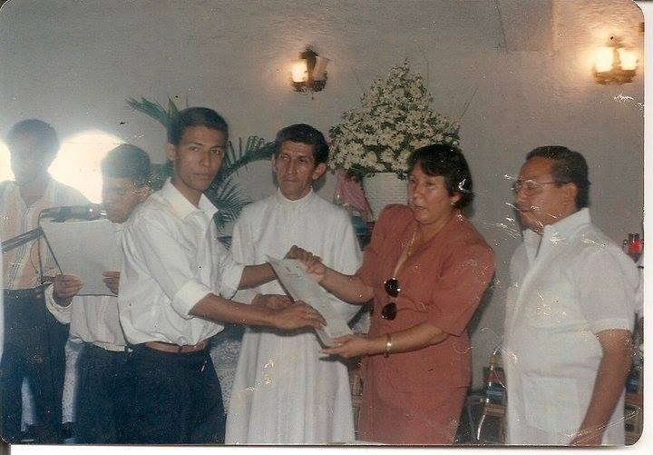
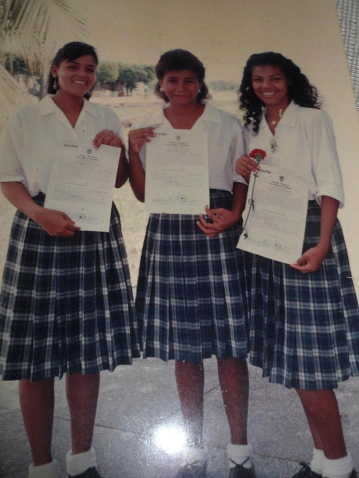

Colegio Institucion Educativa Jose Maria Cordoba
“La educación es el arma más poderosa que puedes usar para cambiar el mundo.””

Colegio Institucion Educativa Jose Maria Cordoba
Urbana, Preescolar, Básica Primaria, Educación Tradicional

Datos del centro Institucion Educativa Jose Maria Cordoba - Escuela Urbana Mixta El Eden, en la provincia de Montería (Córdoba). Infórmate sobre el centro Institucion Educativa Jose Maria Cordoba - Escuela Urbana Mixta El Eden, lee las opiniones de otros usuarios y comparte tu experiencia con padres y alumnos si lo conoces. En caso de que tengas alguna foto del colegio (edificio, instalaciones...), envíanosla para que la subamos a la galería.
Ubicacion, Docentes e Instalaciones